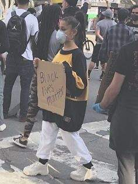

Ariana Grande Butera nació en Boca Ratón, Florida el 26 de junio de 1993. Se ha implicado mucho en las protestas antirracistas de Estados Unidos, en concreto en el movimiento de Black Lives Matter.
Tiene una gran adoración por numerosas películas, entre ellas “Si tuviera 30” la saga completa de “Harry Potter” , y “Jurassic Park”. Se convirtió en el año 2013 en una representante nutricional, por su decisión de llevar a cabo una dieta vegana.
Tiene una triple nacionalidad, italiana, británica y estadounidense.5. Entre sus hobbies favoritos, se puede destacar su pasión por nadar, leer, escribir, o ir de compras.
Encuentra sus redes sociales aquí: